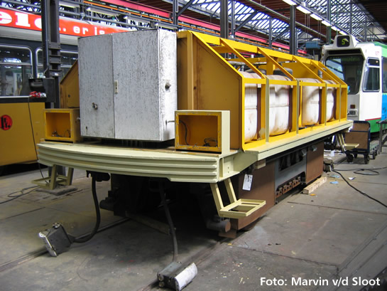
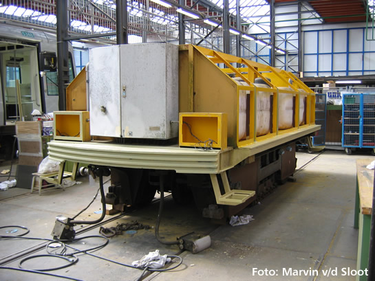
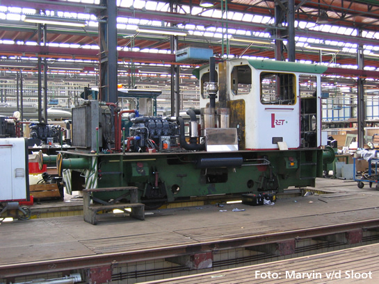
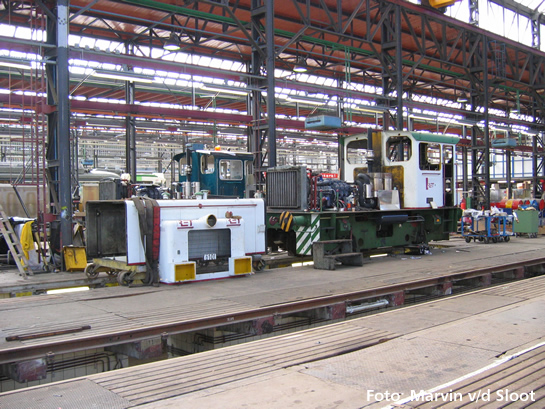

Update werkzaamheden CW Kleiweg en 20 jaar metro Spijkenisse...
- maandag 08 december 2008 09:26
- Geschreven door Joachim
In de Centrale Werkplaats Kleiweg liggen de werkzaamheden aan het reviseren van metromaterieel niet stil. Zo werden onlangs de werkwagens van het metrobedrijf in de serie 7011-7014 compleet gereviseerd. Maar er gebeurt meer. Inmiddels is ook de railslijpwagen (HS7201) in revisie gegaan. Deze werkwagen werd de laatste jaren niet meer gebruikt, omdat deze slecht functioneerde. Railslijpen werd dan ook uitbesteed aan Duitse bedrijven.
Locomotieven 6101 en 6102 worden ook gereviseerd. De 6102 is inmiddels helemaal groen. Nog niet duidelijk is of deze locomotief binnen de RET blijft of verkocht wordt. De 6101 is ook compleet gestript en is reeds voorzien van een nieuw motorblok.
Ook rijtuig 5348 is nog aanwezig in de CW. Zoals bekend is een groot deel van het rijtuig onbruikbaar geworden na een kortstondige maar heftige brand op 9 februari j.l. De meeste elektrische componenten moeten vervangen worden. Deze werkzaamheden vinden plaats op spoor 12, alwaar de 5348 geparkeerd staat. Hoe lang de werkzaamheden nog gaan duren is onbekend.
Hieronder diverse foto's uit de CW, met dank aan Marvin v/d Sloot / OV-Digitaal.

Railslijpwagen HS7201 wordt gereviseerd. Er is al deels opnieuw gelakt...

De railslijpwagen kan gekoppeld worden aan elke locomotief en aan de metrorijtuigen 5201 en 5202.

Locomotief 6101 met het nieuwe motorblok.

Locomotief 6101 op de voorgrond, daarachter de 6102 waarvan de behuizing al groen gelakt is.
20 jaar metro naar Spijkenisse
Het is vandaag 20 jaar geleden dat de metrolijn naar Spijkenisse officieel opengesteld werd. De metrolijn werd vanaf toenmalige eindbestemming Zalmplaat uitgebreid met de stations Spijkenisse Centrum, Heemraadlaan en De Akkers. Om de verbinding te kunnen maken, werd er een metrotunnel aangelegd onder de Oude Maas tussen Hoogvliet en Spijkenisse. 20 jaar geleden werd men middels onderstaande folder (klik voor vergroting) op de hoogte gesteld van de komst van de nieuwe metrolijn.
Klik op de afbeelding voor een grote versie van de folder die in 1985 werd uitgegeven.